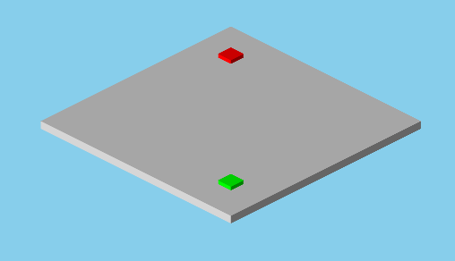

OrthographicCamera QML Type
Defines an Camera with an orthographic projection matrix. More...
| Import Statement: | import QtQuick3D |
| Inherits: |
Properties
- clipFar : real
- clipNear : real
- horizontalMagnification : real
- verticalMagnification : real
Detailed Description
A Camera defines how the content of the 3D scene is projected onto a 2D surface, such as a View3D. A scene needs at least one Camera in order to visualize its contents.
It is possible to position and rotate the Camera like any other spatial Node in the scene. The Node's location and orientation determines where the Camera is in the scene, and what direction it is facing. The default orientation of the Camera has its forward vector pointing along the negative Z axis and its up vector along the positive Y axis.

The OrthographicCamera is a parallel projection Camera, in which parallel lines remain parallel and an object's perceived scale is unaffected by its distance from the Camera. Typical use cases for this type of Camera are CAD (Computer-Assisted Design) applications and cartography.
The following example creates a OrthographicCamera at position [0, 200, 300] in the scene, and with a 30 degree downward pitch.
OrthographicCamera { position: Qt.vector3d(0, 200, 300) eulerRotation.x: -30 }
See also Qt Quick 3D - View3D Example, PerspectiveCamera, FrustumCamera, and CustomCamera.
Property Documentation
clipFar : real |
This property defines the far clip plane of the OrthographicCamera's frustum. Geometry which is further away from the Camera than the far clip plane will not be visible.
The default value is 10000.0.
See also clipNear.
clipNear : real |
This property defines the near clip plane of the OrthographicCamera's frustum. Geometry which is closer to the Camera than the near clip plane will not be visible.
The default value is 10.0.
See also clipFar.
horizontalMagnification : real |
This property holds the horizontal magnification of the OrthographicCamera's frustum.
The default value is 1.0.
See also verticalMagnification.
verticalMagnification : real |
This property holds the vertical magnification of the OrthographicCamera's frustum.
The default value is 1.0.
See also horizontalMagnification.